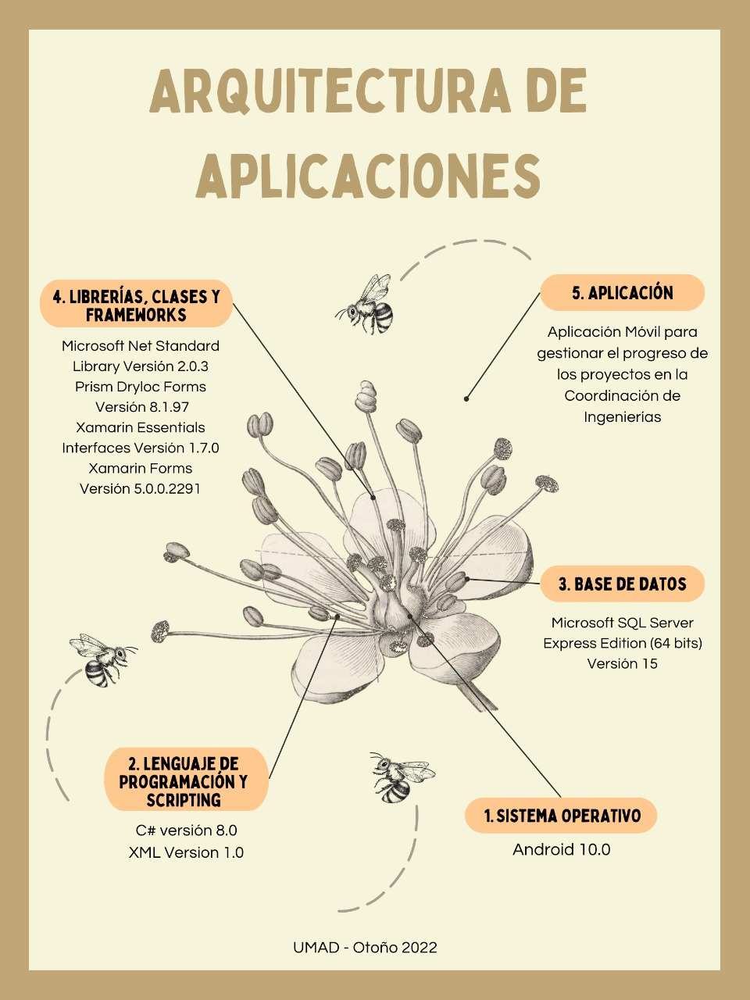

Aplicación Móvil para Coordinación de Ingenierías
Aplicación móvil multiplataforma desarrollada en Xamarin y C# diseñada para administrar y monitorear el progreso de proyectos académicos en la Universidad Madero. Permite crear, editar, cargar y descargar archivos colaborativos, conectándose con un backend en ASP.NET Core mediante API REST.
Xamarin Forms
C# 8.0
Prism Dryloc
SQL Server
Android 10